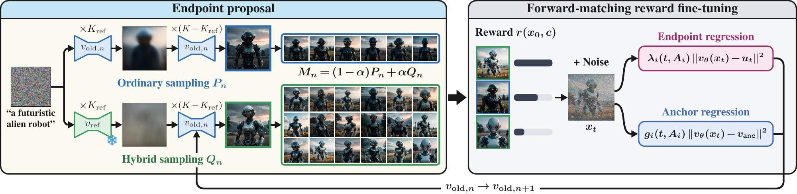
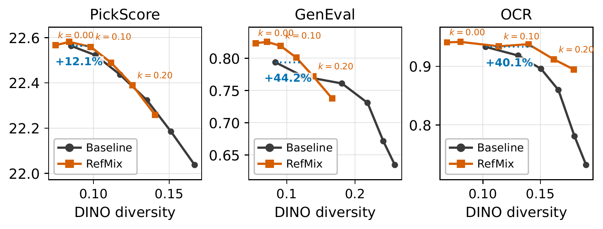
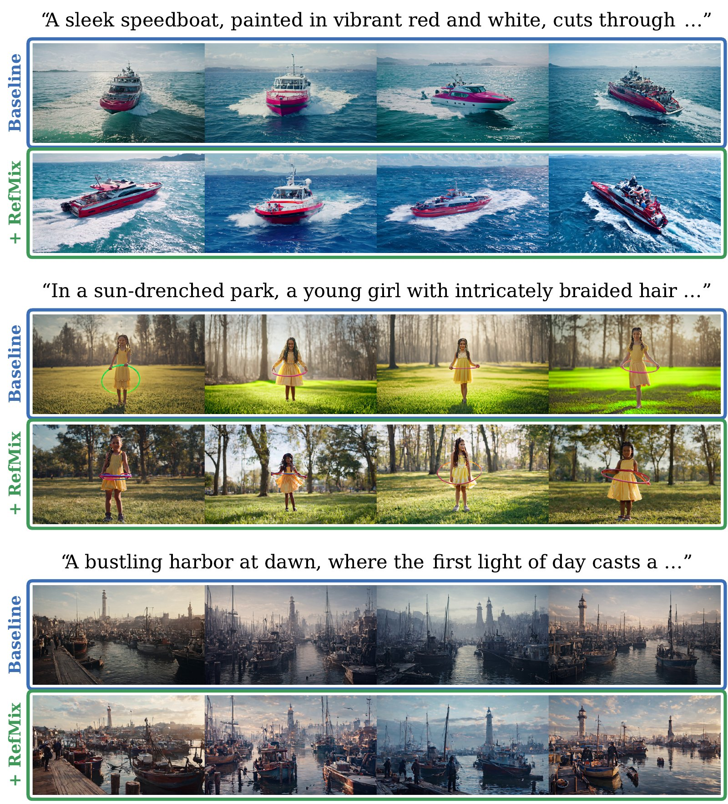

RefMixExpanding Endpoint Proposals for Diversity‑Preserving Reward Fine‑Tuning
1KAIST 2Sony Group Corporation
†Work done during an internship at Sony Group Corporation · *Corresponding authors
Abstract
Online forward matching fine-tunes a flow model on its own reward-scored samples. As high-reward modes take over, alternative modes stop appearing in the training pool and visual diversity shrinks. RefMix fills part of each pool with hybrid samples, which the frozen reference model starts at high noise and the current model finishes, and leaves the reward and the training objective unchanged. Across NFT, AWM and RAM, RefMix improves visual diversity while largely preserving reward, with up to 44% higher diversity at comparable reward.
Reward goes up, diversity goes down
As the reward rises, the samples for a prompt become nearly identical.
Why: rare modes drop out of the training pool
A visual mode that the current model produces with probability \(p\) appears in a pool of \(N\) samples with probability
With \(N=24\) and \(p=1\%\), it is missing from about 79% of pools. A missing mode gets no direct training signal, becomes rarer, and the loop continues.
RefMix: the reference model starts, the tuned model finishes
RefMix changes only where training samples come from. The first high-noise steps set the coarse layout, so running them with the frozen reference model can bring back layouts that the tuned model no longer produces.

Forward matching normally trains on samples from the current model, \(x_0\sim P_n\). RefMix draws them from a mixture with the hybrid sampler \(Q_n\):
With \(\alpha=0.75\), 18 of the 24 samples per prompt are hybrid and 6 are ordinary. Each reference call replaces a current-model call, so the cost is unchanged.
More diverse across methods and tasks
SD3.5-Medium with LoRA, three rewards and three forward matching methods. DINO diversity increases in all nine settings. Reward stays within 0.3% or improves, except AWM on GenEval (0.815 to 0.799).
Same noise, with and without RefMix
All 16 samples for one prompt; tiles at the same position share the initial noise.
Quantitative results
| Task | Method | Reward ↑ | Diversity \(D_{\mathrm{all}}\) ↑ | ||
|---|---|---|---|---|---|
| Baseline | + RefMix | Baseline | + RefMix | ||
| PickScore | NFT | 22.56 | 22.54 | 0.084 | 0.099 |
| AWM | 22.56 | 22.61 | 0.083 | 0.087 | |
| RAM | 22.77 | 22.77 | 0.077 | 0.086 | |
| GenEval | NFT | 0.781 | 0.811 | 0.084 | 0.087 |
| AWM | 0.815 | 0.799 | 0.049 | 0.132 | |
| RAM | 0.822 | 0.837 | 0.059 | 0.101 | |
| OCR | NFT | 0.933 | 0.934 | 0.102 | 0.114 |
| AWM | 0.932 | 0.933 | 0.157 | 0.167 | |
| RAM | 0.833 | 0.890 | 0.089 | 0.115 | |
\(D_{\mathrm{all}}\): mean pairwise DINOv3 distance among 16 samples per prompt, over 64 held-out prompts. LPIPS, Vendi and auxiliary rewards are in the paper.
Training, not just the sampler
The reference prefix can also be used at inference on any fine-tuned model, trading reward for diversity. With the same inference prefix on both NFT checkpoints, the RefMix-trained model gives 12.1%, 44.2% and 40.1% more DINO diversity at the reward of baseline inference on PickScore, GenEval and OCR.

Text-to-video
Unchanged, RefMix carries over to NFT on Wan2.1-T2V-1.3B with the PickScore reward: PickScore rises from 21.26 to 21.47, with 20.3% more DINO diversity at the reward of baseline inference.
